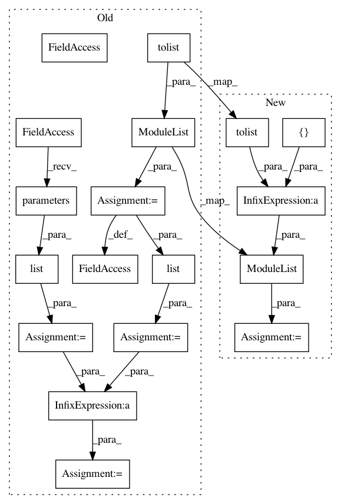

6c17a1019665e1bbaee6826b3204bb7d14996a9f,Tars/models/vae.py,VAE,__init__,#VAE#Any#Any#Any#Any#Any#Any#,13
Before Change
self.encoder = encoder
self.decoder = decoder
self.other_distributions = nn.ModuleList(tolist(other_distributions))
// set losses
reconstruction =\
StochasticReconstructionLoss(self.encoder, self.decoder)
loss_cls = (reconstruction + regularizer).mean()
self.loss_cls = loss_cls
self.test_loss_cls = loss_cls
self.loss_text = str(loss_cls)
// set params and optim
q_params = list(self.encoder.parameters())
p_params = list(self.decoder.parameters())
other_params = list(self.other_distributions.parameters())
params = q_params + p_params + other_params
self.optimizer = optimizer(params, **optimizer_params)
def train(self, train_x, **kwargs):
self.decoder.train()
After Change
optimizer=optim.Adam,
optimizer_params={}):
distributions = nn.ModuleList([encoder, decoder] + tolist(other_distributions))
super().__init__(distributions)
// set losses
reconstruction =\
In pattern: SUPERPATTERN
Frequency: 3
Non-data size: 18
Instances
Project Name: masa-su/pixyz
Commit Name: 6c17a1019665e1bbaee6826b3204bb7d14996a9f
Time: 2018-10-26
Author: masa@weblab.t.u-tokyo.ac.jp
File Name: Tars/models/vae.py
Class Name: VAE
Method Name: __init__
Project Name: masa-su/pixyz
Commit Name: 6c17a1019665e1bbaee6826b3204bb7d14996a9f
Time: 2018-10-26
Author: masa@weblab.t.u-tokyo.ac.jp
File Name: Tars/models/ml.py
Class Name: ML
Method Name: __init__
Project Name: masa-su/pixyz
Commit Name: 6c17a1019665e1bbaee6826b3204bb7d14996a9f
Time: 2018-10-26
Author: masa@weblab.t.u-tokyo.ac.jp
File Name: Tars/models/vi.py
Class Name: VI
Method Name: __init__